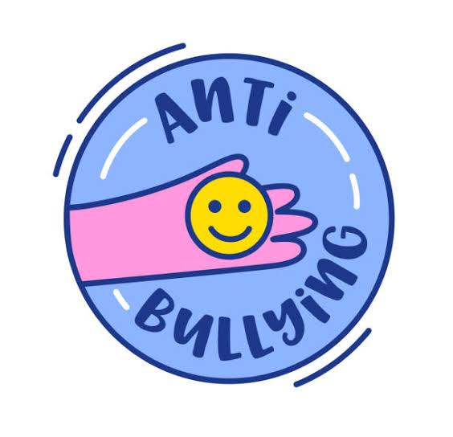

A matemática como ferramenta democrática no combate à violência escolar.
Conheça o Projeto
Nosso projeto nasceu da preocupação com os casos de bullying observados diariamente na escola e na comunidade. Percebemos que, apesar das campanhas de conscientização, ainda existiam atitudes de desrespeito, exclusão e violência verbal entre os estudantes. Como alunos da área de Matemática, decidimos usar os números a nosso favor: criamos um sistema de análise e acompanhamento para mostrar, por meio de dados, gráficos e cálculos simples, como a Matemática pode ajudar a compreender e combater o bullying no ambiente escolar. A ideia foi transformar a teoria em ação — unindo educação, empatia e convivência saudável.